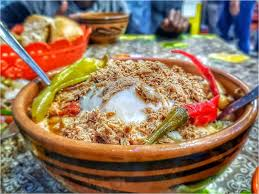
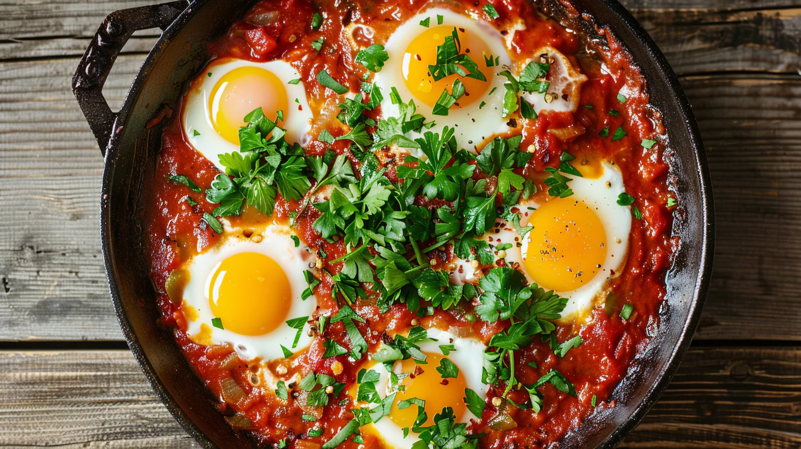
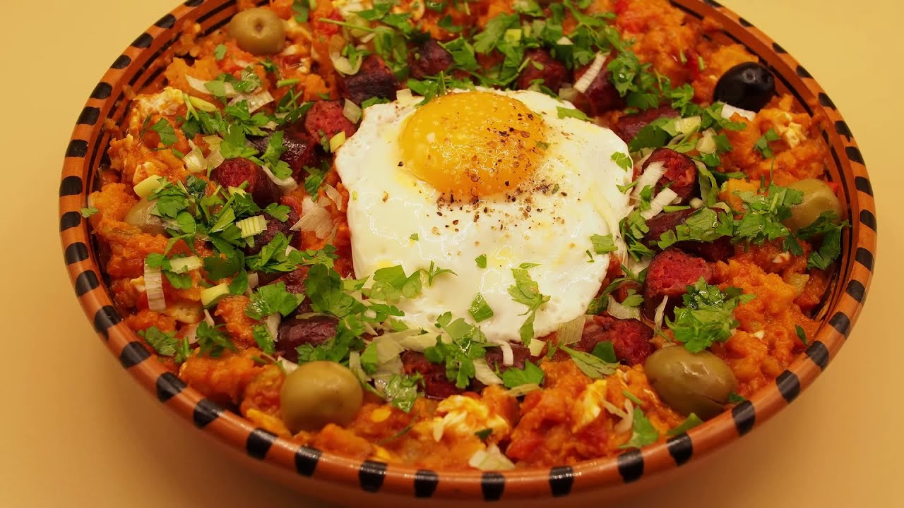
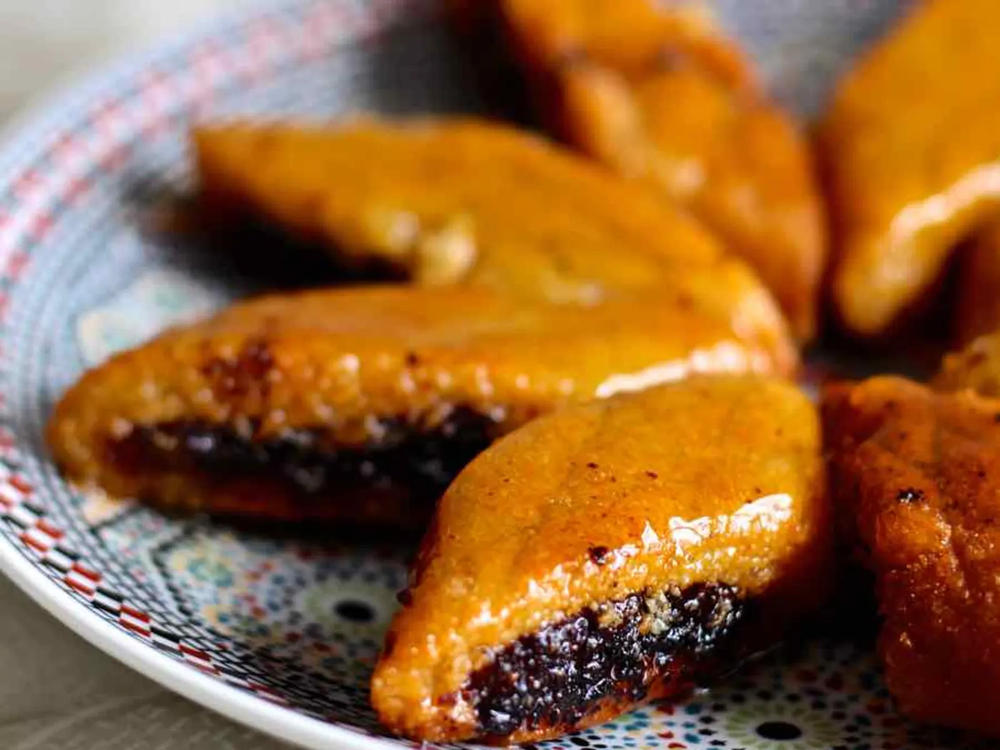
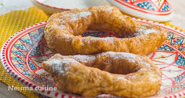

Liste des Recettes Tunisiennes


Couscous
Ceci est une courte description de Couscous, plat national tunisien à base de semoule.
Voir la recette

Lablabi
Ceci est une courte description de Lablabi, une soupe de pois chiches épicée.
Voir la recette

Ojja
Ceci est une courte description de Ojja, un plat de tomates et d'œufs épicé.
Voir la recette

Kafteji
Ceci est une courte description de Kafteji, un mélange de légumes et d'œufs.
Voir la recette

Makroud
Ceci est une courte description de Makroud, une pâtisserie à base de semoule et de dattes.
Voir la recette

Bambalouni
Ceci est une courte description de Bambalouni, un beignet sucré tunisien.
Voir la recette